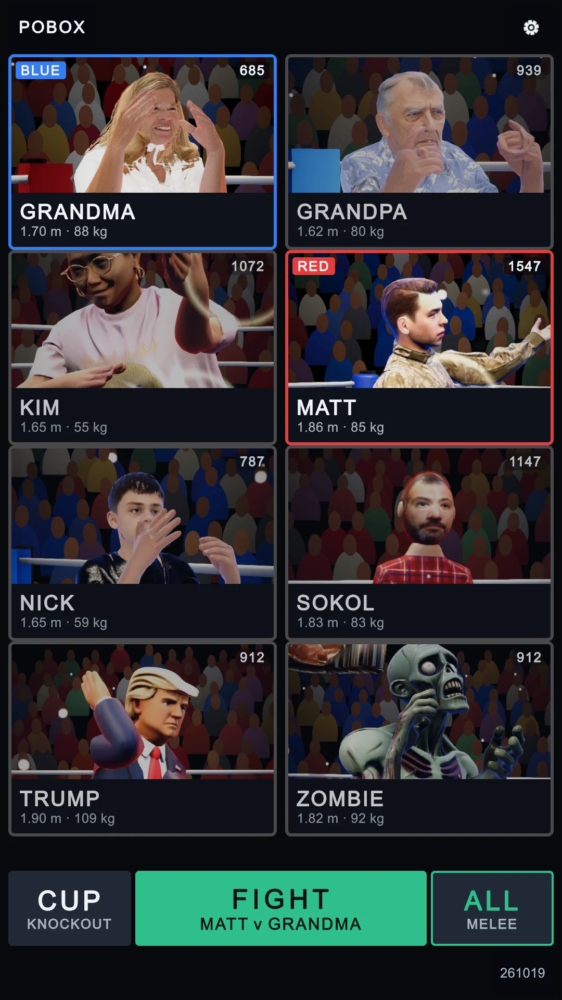
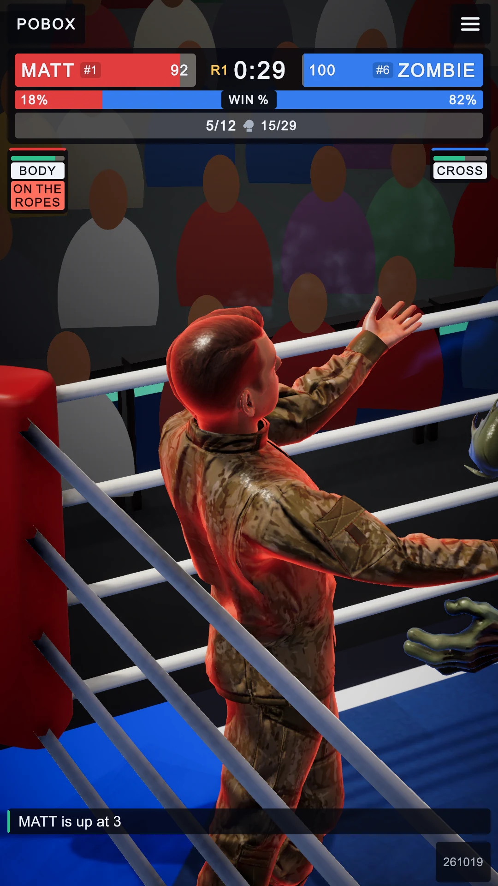
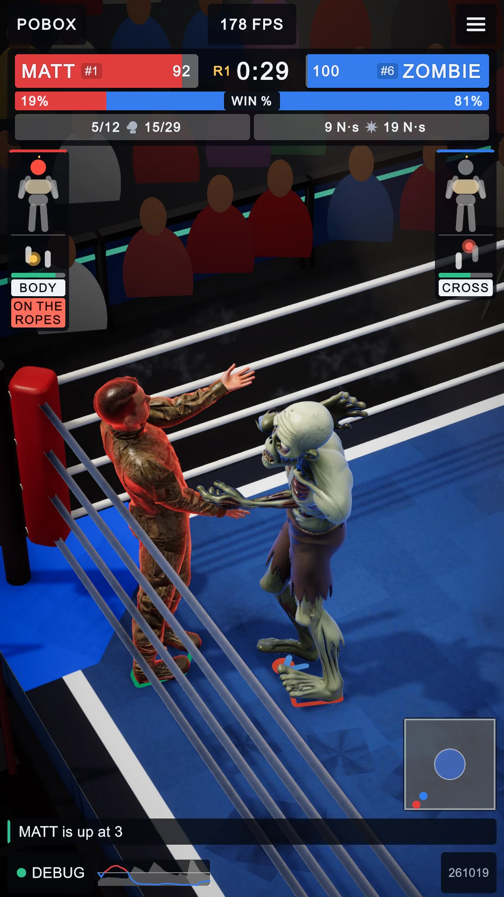
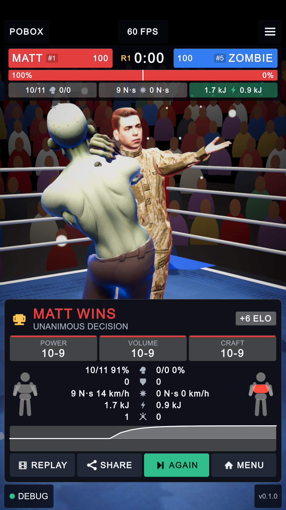
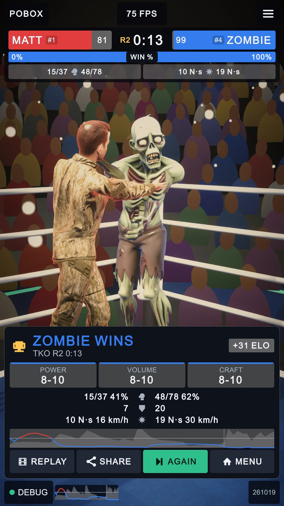
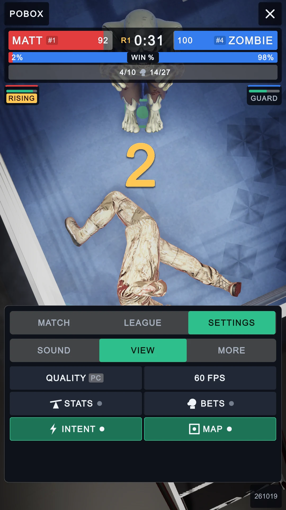
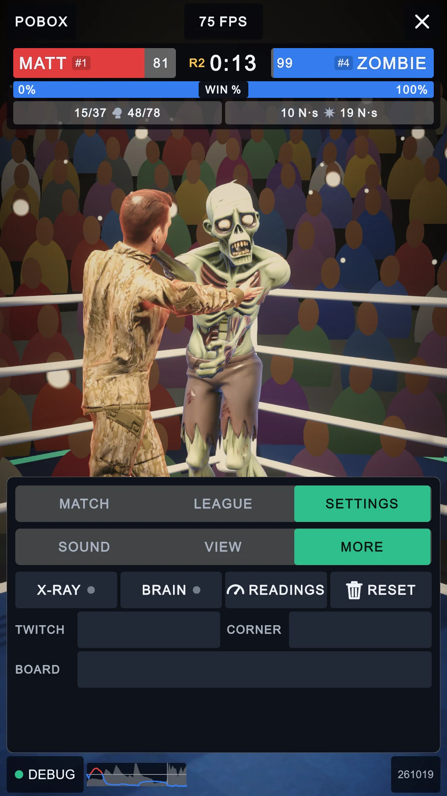

UI report, 2026-10-30
Captured in the editor at 1080 x 1920 with the dev script (Build/Shots); every "after" passed the one-screen audit (offscreen 0, overlap 0, spill 0, clipped 0, anchors ok). Yellow boxes mark what changed.
1. Menu: each fighter's rating, and a streak once it has one
Top-right of every card: the ladder's Elo (League/LeagueTable.cs, seeded from the CPU ratings), with W3 / L2 after it for two or more wins or losses in a row. The corner tag keeps the top-left.


2. In the fight: intent arrows, ring map, win-probability strip
Three switches, all off by default so the plain broadcast is unchanged. INTENT (VIEW tab): an arrow on the canvas from each boxer's centre of mass along where it is heading (0.6 s ahead), and a line from the loading shoulder to the other's head when its brain drives an arm hard. MAP: the ring from above, bottom-right, both boxers with a trail, the centre circle tinted by whoever has held it this round. With STATS (or two fingers tapped, TAB's twin) the bout's win probability so far runs as a strip beside DEBUG.


3. Result card: the bout's win line
Red's chance up, blue's down, the line in the colour of whoever it favoured, how busy the fight was as a faint fill, a tick where each round began. The same line is on the round-break card.


4. Settings
VIEW gains INTENT and MAP. MORE gains BOARD, the online leaderboard's Azure Table address (add-only SAS token, off when empty); TWITCH and CORNER now share a row, because three field rows overflowed the page (the layout test caught it: 48 failures, all "spill" on this tab, before the fix).


Also changed, not visible in a still
| What | Where |
|---|---|
| Radar gun: a punch 1.6x harder than usual shows its glove speed even with STATS off | HudView.radarOverUsual |
| Two fingers tapped together toggle STATS | HudView.TwoFingerTap |
| Online leaderboard page with an Elo per fighter pooled from every device | WebGLTemplates/Po/leaderboard.html, training/tools/leaderboard.py |